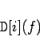
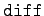
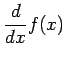

Inhalt Index DeskTop Bronstein

 Computeralgebrasysteme Anwendungen von Computeralgebrasystemen Differential- und Integralrechnung Maple
Computeralgebrasysteme Anwendungen von Computeralgebrasystemen Differential- und Integralrechnung Maple


Im Unterkapitel Maple, Abschnitt Funktionen und Operatoren wird der Operator der Differentiation  eingeführt. Seine Anwendung mit verschiedenen optionalen Argumenten gibt die Möglichkeit, Funktionen in Operatordarstellung zu differenzieren.
eingeführt. Seine Anwendung mit verschiedenen optionalen Argumenten gibt die Möglichkeit, Funktionen in Operatordarstellung zu differenzieren.
Seine vollständige Syntax lautet:
|  | (20.74a) |
Hierdurch wird die partielle Ableitung der (Prozedur-) Funktion f nach der i-ten Variablen bestimmt. Das Resultat ist wiederum eine Funktion in Prozedurdarstellung.  ist äquivalent zu
ist äquivalent zu
| (20.74b) |
Das Argument f ist dabei ein als Prozedur behandelter Funktionsausdruck. Dieser kann neben vordefinierten Funktionen auch selbstdefinierte Funktionsnamen, mit Pfeiloperatoren definierte Funktionen usw. enthalten.
| Beispiel |
|
Es sei |
Neben dem Operator der Differentiation existiert die Operation  mit der Syntax
 |
(20.75a) |
Hier ist ausdr ein algebraischer Ausdruck in den Variablen . Das Resultat ist die partielle Ableitung des Ausdrucks nach den Variablen  . Wenn n>1 ist, dann erhält man das gleiche Resultat durch Mehrfachanwendung der Operation :
. Wenn n>1 ist, dann erhält man das gleiche Resultat durch Mehrfachanwendung der Operation :
| (20.75b) |
Mehrfache Differentiation nach ein und demselben Argument kann mit dem Folgenoperator  dargestellt werden.
dargestellt werden.
| Beispiel |
|
|
Wenn die Funktion f(x) nicht definiert ist, liefert die Operation diff die auftretenden Ableitungen symbolisch mit  zurück.
| Beispiel |
|
|